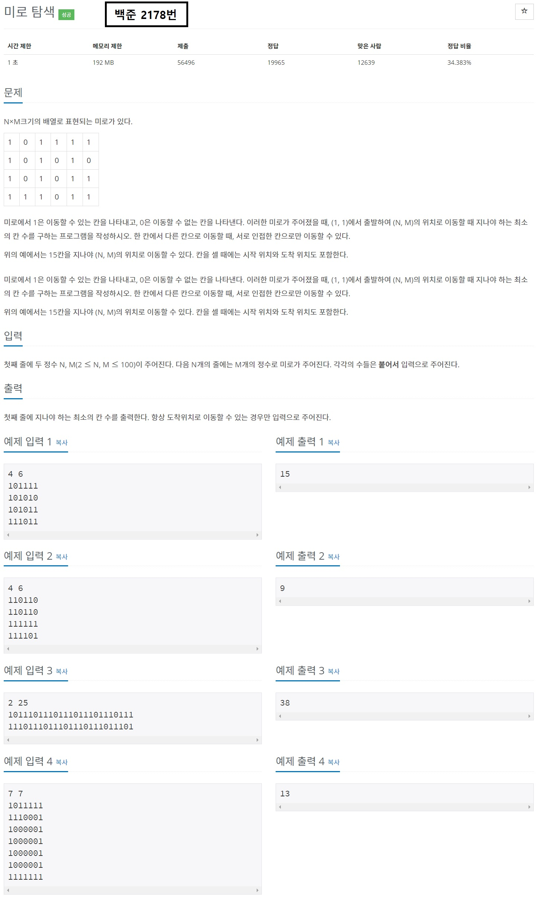
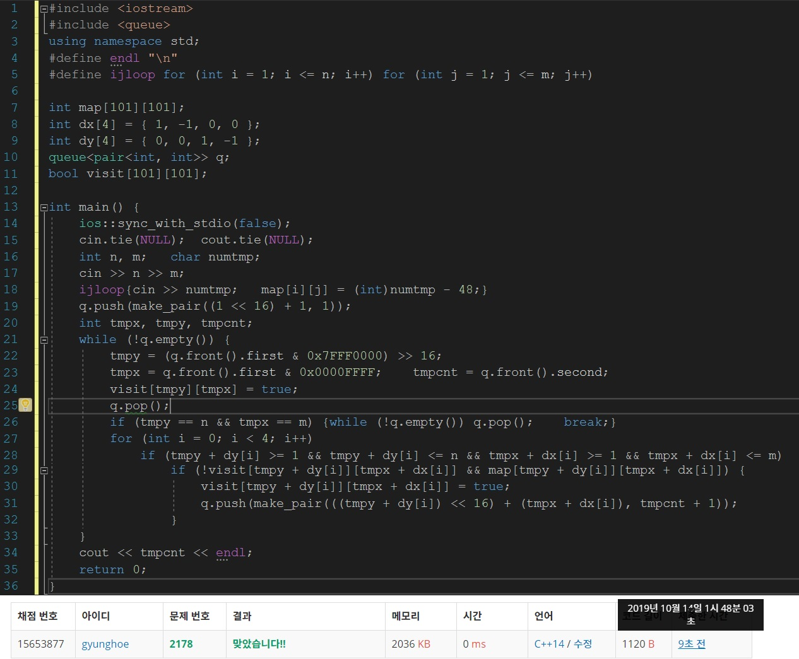

목차
- 브루트포스란?
- 브루트포스 문제를 출제하는 이유
- 프루트포스를 이용하여 풀 수 있는 문제
- 브루트포스의 구현과 주의사항
글을 시작하기에 앞서
-이 글은 [2019-10-13]에 작성된 글입니다. 실제 최신 정보와는 다를 수 있습니다.
-본 게시물은 웹 프로그래밍 실습의 중간 대체과제로 제작된 것으로, 본 블로그 만을 통해 삼성 SW 역량테스트를 준비하는 것을 권하지 않습니다.
1. 브루트포스(Brute-Force)란?

3자리 비밀번호로 열리는 자물쇠를 2시간 안에 열어야 할 때, 가장 마지막에 할 수 있는 방법은 무엇일까요? 아마 000부터 999까지 모든 경우의 수를 대입해보는 것입니다. 브루트포스란 말 그대로, 모든 경우의 수를, 어떻게 보면 가장 원시적인 방법으로 시도하는 것입니다.
2. 브루트포스 문제를 출제하는 이유

브루트포스 알고리즘은 삼성 SW 역량시험 A형에서 DFS, BFS 다음으로 자주 출제되는 문제 유형 중 하나인데요, 브루트포스 문제는 DFS와 BFS와 비교할 때 조금 더 신중한 접근이 필요하고, 따라서 비교적 더욱 까다로운 문제입니다. 시험에서는 브루트포스 문제를 출제함으로써 응시자가 다음과 같은 능력이 있는지 확인할 수 있습니다.
- 반복되는 패턴을 발견할 수 있는 능력
- 왜 DFS가 아닌 BFS를 선택해야 하는지 판단하는 능력
- 문제 해결에 적합한 자료구조를 고르는 능력
- 생각을 코드로 나타낼 수 있는 능력
다시 말해, 문제에서 어떠한 조건이 만족 되었을 때 어떠한 주기를 두고 반복이 발생하는지, 또 반복을 언제 끝내야 하는지를 포착해야 문제를 해결할 수 있다는 말입니다. 일반적으로 DFS가 아닌 BFS를 사용하는 이유는 BFS가 DFS에 비해 두 지점 사이의 거리가 일정할 떄에 최단거리를 더 빨리 구할 수 있기 때문입니다. DFS는 하나의 경우를 끝까지 탐색하기 때문에 최단거리를 구하기 위해서는 모든 항을 살펴봐야 하지만, BFS는 최단거리가 나오는 즉시 반복을 종료할 수 있고, 따라서 더욱 짧은 시간 내에 문제를 해결할 수 있습니다.
3. BFS를 이용하여 풀 수 있는 문제
이 문제는 지점 간의 거리가 일정할 때 시작점에서 목표 지점까지 가는 최단 거리를 물어봅니다. DFS를 사용하여 풀어도 풀 수는 있지만, 최단 거리만 구하면 됨으로 BFS를 사용 하여야 제한 시간 내에 문제를 해결할 수 있습니다.
이 문제에서 반복되는 행위는 시작점에서의 거리를 구하는 일이고, 반복은 최단거리를 구하는 시점에 종료됩니다.
이 문제에 사용해야 하는 자료구조는 큐입니다. 거리를 1씩 더해가면서 가장 짧은 거리 를 구하기만 하면 되기 때문입니다.
4. BFS의 구현과 주의사항
BFS문제를 풀 때에 주의해야 할 점은 세 가지입니다
- BFS로 풀 수 있는 문제인가
- 중복을 어떻게 처리할 것인가
- 모든 항을 꼭 검사해야 하는가
가장 우선적으로 고려해야 할 점은 정말 이 문제가 BFS로 풀 수 있는 문제인지 확인하는 것입니다. 예를 들어, 한 지점에서 다른 지점까지 가는 거리가 모두 다를 경우, BFS로 문제를 풀기 어렵습니다.
BFS문제를 풀 때에는 중복을 허용해야 하는 경우가 종종 있습니다. 이미 방문하였던 영역이라 하더라도 더 나은 조건으로 방문할 수 있을 경우에는 방문해야 합니다.
다음으로, 문제에 따라 일부 항을 뛰어 넘어야 될 수 있습니다. 모든 항을 검사할 필요가 없는 문제의 경우에는 문제의 조건을 충족하지 않는 영역을 뛰어넘어야 제한 시간 내에 문제를 풀 수 있는 경우가 있습니다.
블로그의 내용이 도움이 되었나요? 저에게 주신 의견을 바탕으로 더 나은 컨텐츠를 만들어갈게요:)